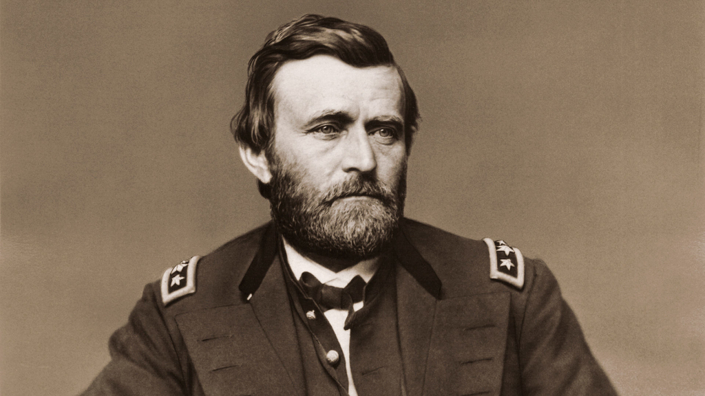

History of nature conservation
US National Parks: from idea to implementation
Arkansas Hot Springs
The first territory protected by the federal government as a resort area (later to become a national park).
Yosemite Grant
This is the first time in history that the federal government has allocated land for public use and conservation.
The Yellowstone Act
Yosemite Park
The park was officially established after many years of efforts by nature conservationists.
The Law on Forest Reserves
President Harrison signs a law allowing the creation of forest reserves on public lands.
Roosevelt Camping with Muir
President Roosevelt spends 3 days hiking with naturalist John Muir, which leads to the expansion of the national park system.
The Law on Antiquities
Creating an NPS
Founding of the National Park Service under the leadership of Stephen Mather.
The Grand Canyon
Transformation from a national monument into a full-fledged park.
Civilian Conservation Corps
As part of the New Deal, a CCC is being created, whose members build roads, trails, and infrastructure in parks.
Mission 66
A 10-year program to modernize park infrastructure for the 50th anniversary of the National Park Service.
The Law on Wilderness
Death Valley

Inclusion in the system after years of debate about the appropriateness.
The ANILCA Law
The Alaska National Land Protection Act doubles the area of the national park system.
The Return of the Wolves
Reintroduction of gray wolves to Yellowstone after a 70-year absence.
100th anniversary of the NPS
The National Park Service is celebrating the centennial with large-scale events across the country.
New River Gorge
The first inclusion of a new park in the last 26 years (West Virginia).